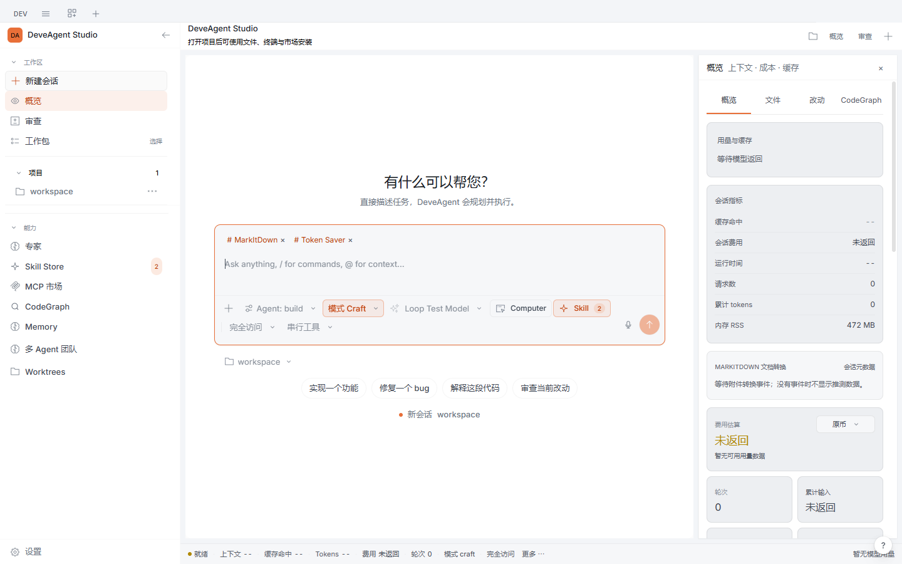
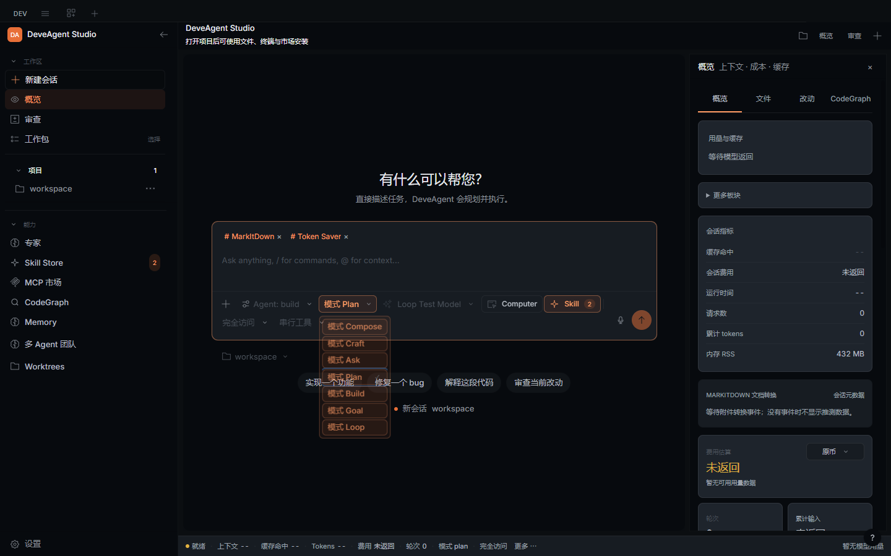
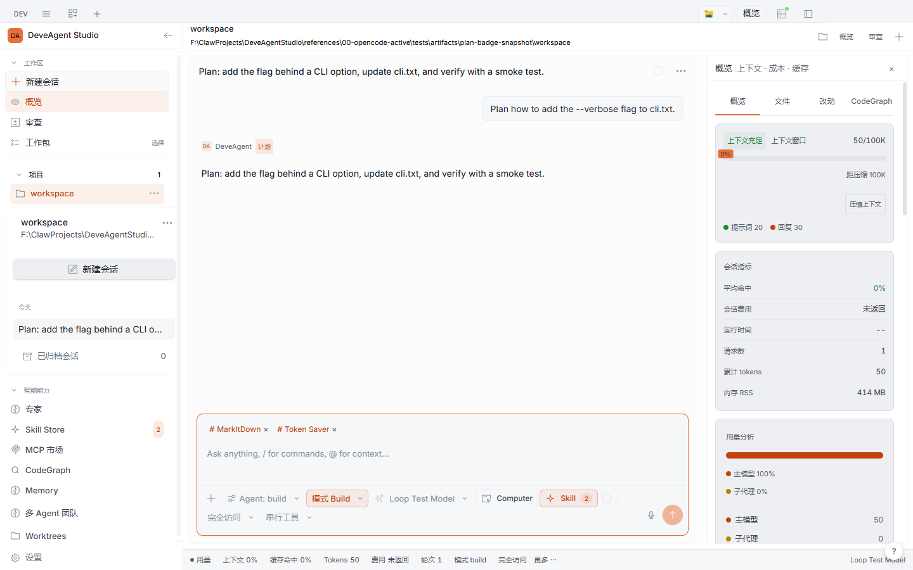
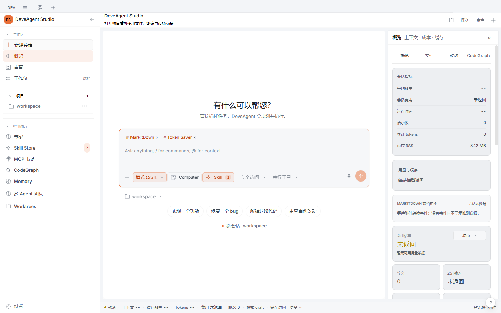

Most AI coding tools are either a terminal with a chat box, or a pretty window that hides what the model is doing. Neither survives hour six. DeveAgent Studio keeps the proven OpenCode engine and adds an agent layer that is bounded, observable and recoverable.
The hard part is not the first answer — it is hour six. A run that cannot tell you what it changed, what it spent, why it stopped, or whether it actually finished is a run you cannot trust with real work.
Goals carry acceptance criteria, budgets and deadlines. Loops have run limits and a lease so two workers never run the same pass. A goal whose usage meter cannot be read stops instead of spending blind.
Every Goal, Loop, Team and MoA run lands in one ledger with its status, child sessions, real token totals and stop reason. Cache hit rate, cost and rounds come from provider usage records — never invented.
Each turn records a pre-turn checkpoint. Restoring one brings back both the file bytes and the conversation position, and the rewind stays reversible until you send your next message.
Captured from packaged builds by the project's own acceptance probes.




Autonomy you can inspect, not a firehose you have to babysit.
| Goal | Turns a request into acceptance criteria. When the agent claims completion, an independent verifier model re-checks every criterion against the transcript — the agent that did the work is not the only judge of it. |
| Go mode | One switch: submit a goal and it is confirmed automatically, running plan → execute → self-verify without a confirmation round trip. |
| Loop | Repeat a task on an interval or cron, with run budgets, retry limits, wall-clock deadlines and a lease. |
| Team / MoA | Parallel or debating members as real child sessions, each with its own model and role. A failed member fails the run and can be retried individually. |
| Self-improvement | The agent can persist a reusable procedure as a skill. A provenance ledger records who wrote each one — the agent may only update its own; user-authored and pinned skills are refused, never silently overwritten. |
| Rewind | Per-turn checkpoints restore file bytes and conversation position; reversible until your next message. |
Three rules the code enforces, not just the marketing copy.
A provider fallback may only switch to a model whose cost is known to be zero. Paid candidates are skipped by default, and when a switch happens you get an in-app announcement — not just a log line.
When the provider returns no usage, the UI says "not returned" instead of showing 0. Unknown usage stays unknown in the ledger too.
A failed child turn fails the task. A swallowed error that once let a run report success while its model returned 500s was traced to the wait seam and fixed with a regression probe.
One file, no runtime to install first.
DeveAgent-Studio-win-x64.exe · 180 MB · installer
Build from source today; signed builds are on the roadmap.
AppImage and deb builds are produced by the packaging script.
Open Settings → Providers and connect any OpenAI-compatible endpoint, including free tiers. Nothing is bundled and nothing is proxied — your keys stay on your machine.